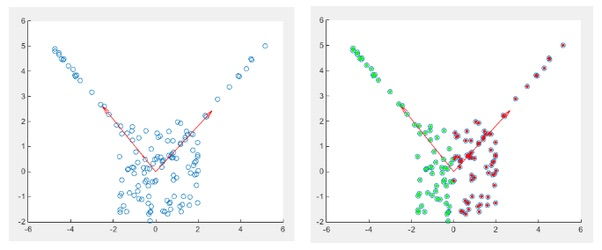
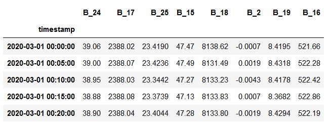
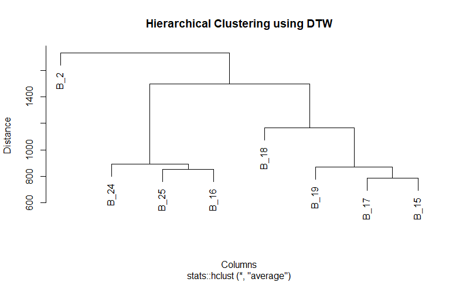

Clustering
Overview
Clustering is an unsupervised ML technique for discovering interesting patterns in data, such as groups of customers based on their behavior. It helps us to find natural groups in the feature space of input data. Majorly there are three kinds of clustering:
- Partitional
- Heirarchical
- Density
Paritional Clustering
Partitional clustering algorithms generate various partitions and then evaluate them by some distance metric. It is suitable for data are in form of spherical blobs. One of the most commonly used partitional clustering algorithms is the k-means clustering algorithm. User is required to provide the number of clusters (k) before starting and the algorithm first initiates the centers (or centroids) of the k partitions. In a nutshell, k-means clustering algorithm then assigns members based on the current centers and re-estimates centers based on the current members. These two steps are repeated until a certain intra-cluster similarity objective function and inter-cluster dissimilarity objective function are optimized.
In this project, Kmeans can be constructively used to determine if there are any hidden groups/segments in the sensor data. This may suggest if a particular group of sensor readings have a high associativty with the occurence/requirement of manitenance cycle of a furnace.
Heirarchical Clustering
Hierarchical clustering algorithms repeat the cycle of either merging smaller clusters in to larger ones or dividing larger clusters to smaller ones. Either way, it produces a hierarchy of clusters called a dendogram. Agglomerative clustering strategy uses the bottom-up approach of merging clusters in to larger ones, while divisive clustering strategy uses the top-down approach of splitting in to smaller ones.
Distance Metrics
Euclidean distance is a common distance metric used in k-means clustering to measure the similarity between data points. In k-means clustering, the goal is to partition the data into k clusters, where each cluster contains data points that are similar to each other. For each data point in the dataset, we calculate its distance to each of the k cluster centers using the Euclidean distance formula.
Cosine similarity, measures the cosine of the angle between two vectors and is scale-invariant. To calculate the cosine similarity between a data point and a centroid, we treat each data point and centroid as a vector of features. The similarity between the two vectors is then calculated as the dot product of the vectors divided by the product of their magnitudes.

Manhattan distance is an alternative distance metric that can be used in k-means clustering instead of Euclidean distance. For each data point in the dataset, we calculate its distance to each of the k cluster centers using the Manhattan distance formula. Based on the distances, we assign each data point to the nearest cluster center, creating k clusters.

Implementing clustering on temporal sensor data is not straighforward, and making it simpler for interpretation is a challenging task given that the number of rows are more than 20,000. Hence, the project will leverage heirarchical clustering to calculate similarity between the indivisual sensor time series within the dataset rather than on the a single record/row.
Difference between the two
For Hierarchical clustering, one doesn't need to determine the number of clusters. However, for partitional clustering one should mention the required number of clusters. Hierarchical clustering returns a much more meaningful and subjective division of clusters but partitional clustering results in exactly k clusters.
Data Preparation
Algorithms like Kmeans and DBSCAN requires data to be in numerical format. This is because the distance metric used to computer centroids is based upon numerical values. If the data is categorical then the results of clustering would not be accurate. This is becuase the label is a relative measure rather than absolute. For example, if a doctor asks the patient to describe their pain level between 1 to 10, then the measure of 5 can vary from one subject to another.
For clustering, the CSV file named clustering_data is used. No extra preprocessing was required to obtain this data, apart from removing the categorical columns.This is the original data:

This is the transformed data:
Code
Here is the code where the following components are implemented:
Results
KMeans
For simplicity, KMeans has been performed on a subset of 2 columns from the clustering dataset. The columns names are B_18 and B_17. Reason of choosing only this pair of column was their scatter plot shape. From rest of the scatter plots, this pair exhibited some irregularity in shape. Apart from this pair, all the columns scatter plots resulted in a single well defined blob
Since this pair of features also doesn't have any discrete clusters, Implementing KMeans will not have meaningful results:
Performing Elbow method and Silouhette method
Although the data doesn't seem to have any clusters, the choice of number of clusters to be 3 is the best. This is because the change in distortion is not significant once we start increasing the number of clusters. After observing the above silhouette plot it can be inferred that the elbow's plot interpretation matches with this plot. That is, the best Kmeans clustering performance is seen for three clusters.
Hierarchical Clustering
Performing heirarchical clustering with cosine similarity not on each row but on columns rendered a dendogram which classified all the columns into one cluster and a single column in another cluster. Given that the nature of the data is temporal, I used dynamic time warp (dtw) as a measure of similarity for exploration. As expected it returned a better classification:
From the dendogram we can infer that there are three major clusers. It coincides with the result of Kmeans above.
Conclusion
As stated above, since the data does not reflects any well defined paritions, using clustering techniques on each row is not benificial. However, similarity between time series columns can be analyzed and the results can be used to perform feature engineering.